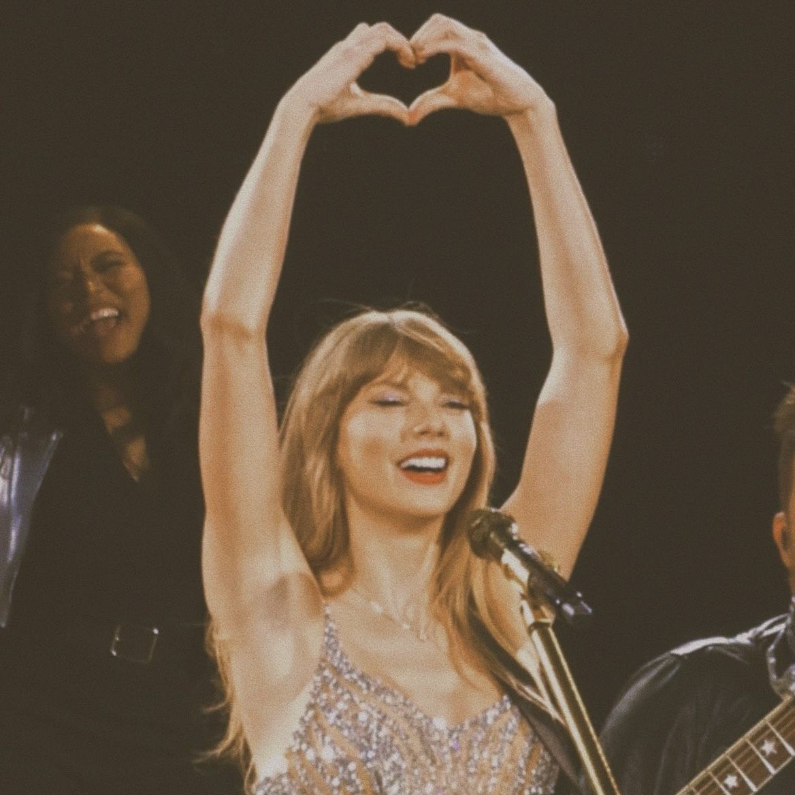

redfining the music industry with style, being fearless and untouchable; we were definetly not ready for
it.
Check out this dashboard mapping her lyrics!
Get a crash course in Swiftie World below!
Re-recordings
After being denied the opportunity to purchase her own music, Taylor decided to re-record her first six studio
albums. In addition to releasing the highly anticipated and beloved albums, she is releasing "Vault Tracks", songs
that were recorded during the era of the album but didn't make the final cut onto the released album. Taylor set a
pioneer example in the music industry, and became a beacon and advocate for artists to own their own work.
Below are the released re-recorded albums, along with the vault tracks released with them.
Fearless
You All Over Me
Mr. Perfectly Fine
We Were Happy
That's When
Don't You
Bye Bye Baby
Red
Better Man
Nothing New
Babe
Message In A Bottle
I Bet You Think About Me
Forever Winter
Run
The Very First Night
All Too Well (10 Minute Version)
Speak Now
Electric Touch
When Emma Falls in Love
I Can See You
Castles Crumbling
Foolish One
Timeless
1989
"Slut!"
Now That We Don't Talk
Suburban Legends
Is It Over Now?

What Taylor has meant to the world: of music, of women and of Swifties
The discography of Taylor Swift is beyond catchy melodies and cleverly worded lyrics. She truly redefines the
standard of song-writing as one of the few artists in the world who has originally written all of her 243
released songs. She has broken the status quo and challenged the possibilities of music. Taylor has very eloquently narrated and composed the soundtrack to girlhood, womanhood and everything in between. Although she is a widely accomplished musician, her intimate lyrics and devotion to her fans create a beautiful little world of connection and belonging.
"Long live the magic we made."
Learn more about the creator of this page, Audrey.